PLAN CONTENT
跨域起點｜以書籍為媒介的海外文化實踐 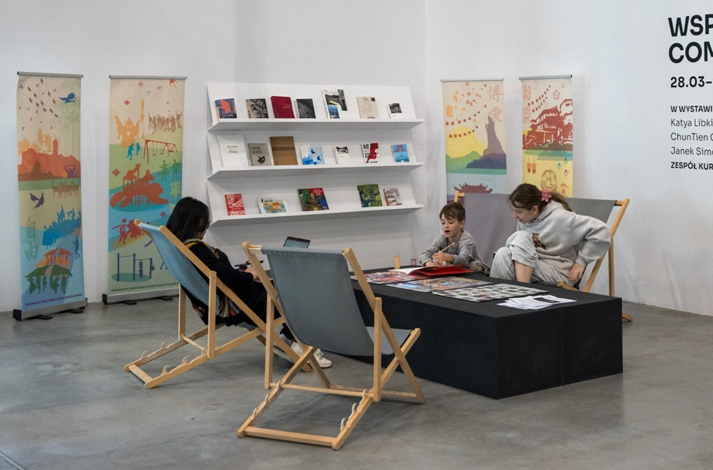
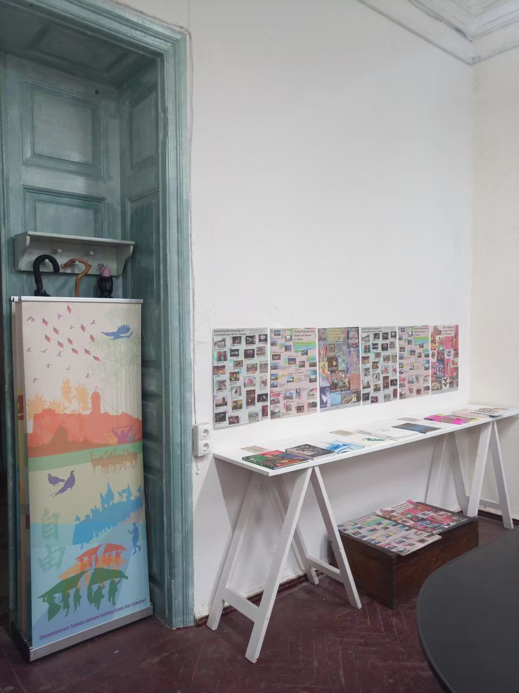
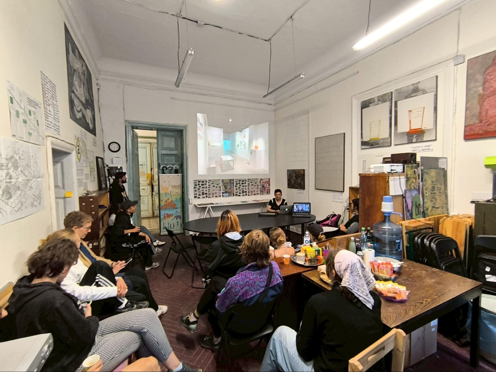
米豆藝術空間在一次次前往海外展覽的過程中，除了將臺灣藝術帶到遠方，我們心裡始終有個期待：如何能讓不同文化背景的人，更自然地走近臺灣？於是，我們在展場的一角築起了一處小巧的「臺灣圖書館」。這裡陳列著參展藝術家的畫冊、當代藝術出版、介紹臺灣在地風土的書籍，以及洋溢生活溫度的原創繪本。我們希望透過指尖翻閱紙頁的片刻，讓書籍成為跨越語言的媒介，在遠方觀眾的心中悄悄播下認識臺灣的種子。
這樣的小巧思，也讓我們一路上收穫了很多回饋。2025年3月，我們帶著這座微型圖書館，在波蘭比亞維斯托克亞森諾美術館（Galeria Arsenał）的《共同景色／陌生的問候》展覽中與當地觀眾相識；同年6月，這座微型圖書館漂流到了摩爾多瓦首都基希涅夫的 Zpace 文化中心（Zpace Cultural Center），不僅展出圖書，更透過線上講座與當地觀眾深入對話，在書籍的討論、交流與文化分享中獲得了更多能量。
翻開島嶼｜羅茲攝影節裡的臺灣多重面貌 2026年，我們帶著圖書館計畫前進波蘭羅茲國際攝影節（Fotofestiwal Łódź）。米豆藝術空間受邀主辦了攝影書展《島嶼複眼：臺灣的多重影像》（Compound Eyes of the Island: Multiple Visions of Taiwan），將整座島嶼豐沛而異質的視覺經驗打包帶往歐洲。
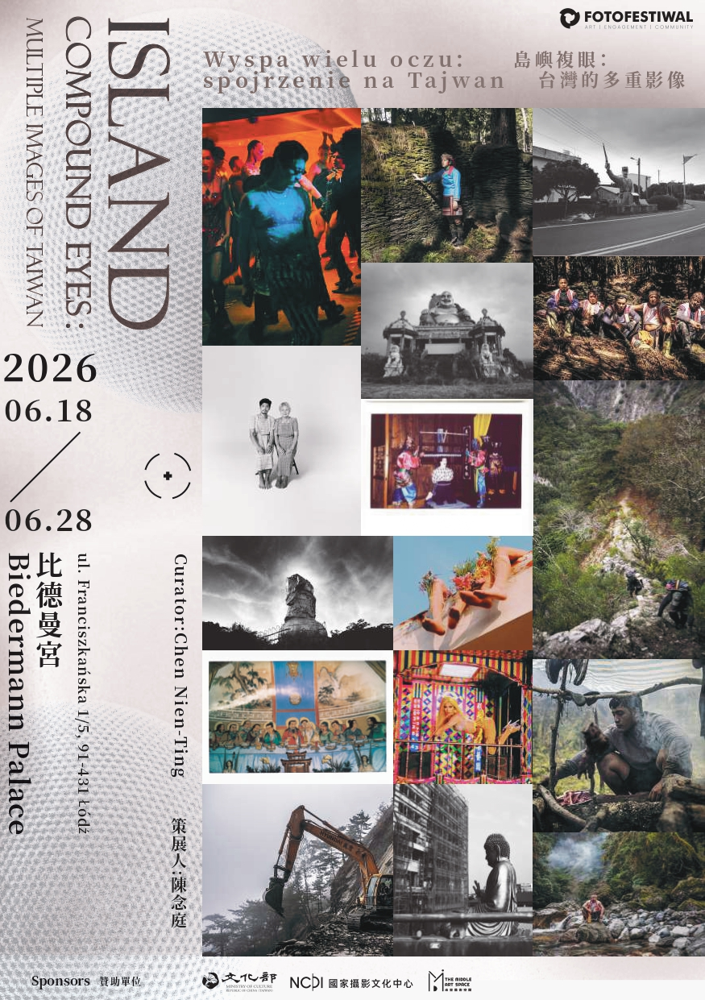
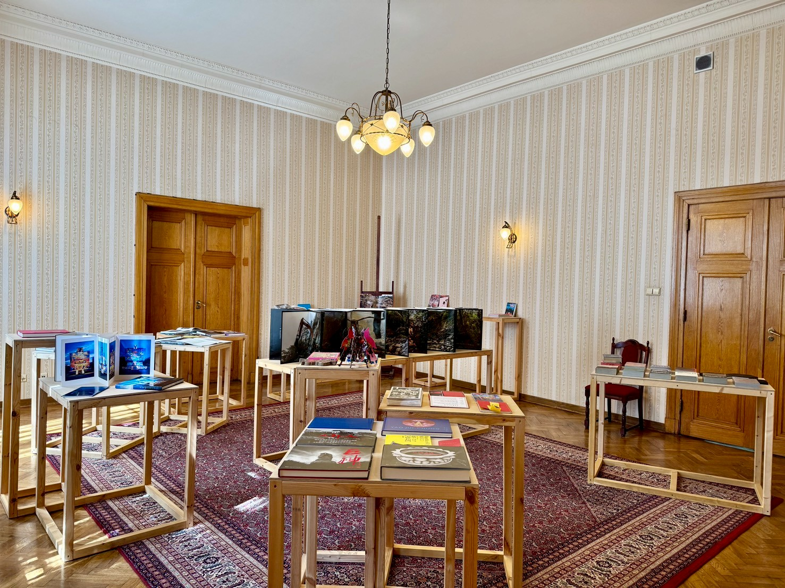
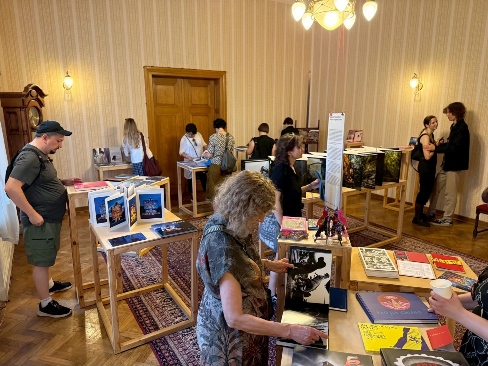
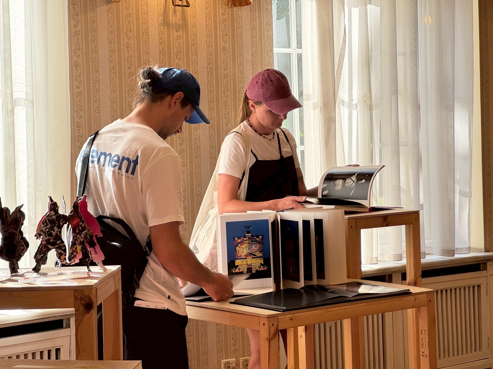
我們精心挑選了超過四十冊臺灣當代攝影書，在異地築起一幅多重維度的臺灣地景。在這些紙頁間，觀眾能翻閱到深邃幽微的家族記憶、凝視解構性別疆界的酷兒身體；也能順著影像的紋理，踏查原住民族與土地的緊密連結、穿梭於工業文明退場後的廢墟殘景，並感受野台民間演藝裡生猛流動的民俗生命力。每一本攝影書就像是一只複眼切面，跳脫了單一符號的國家想像，讓觀者能在一次次指尖翻閱與視線停留中，體會臺灣當代社會的複雜肌理與真實溫度。
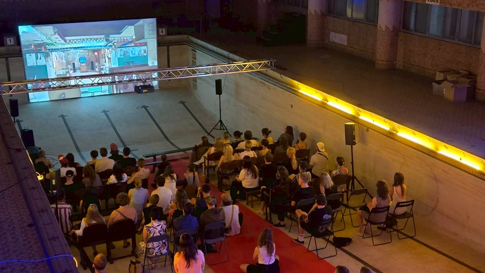
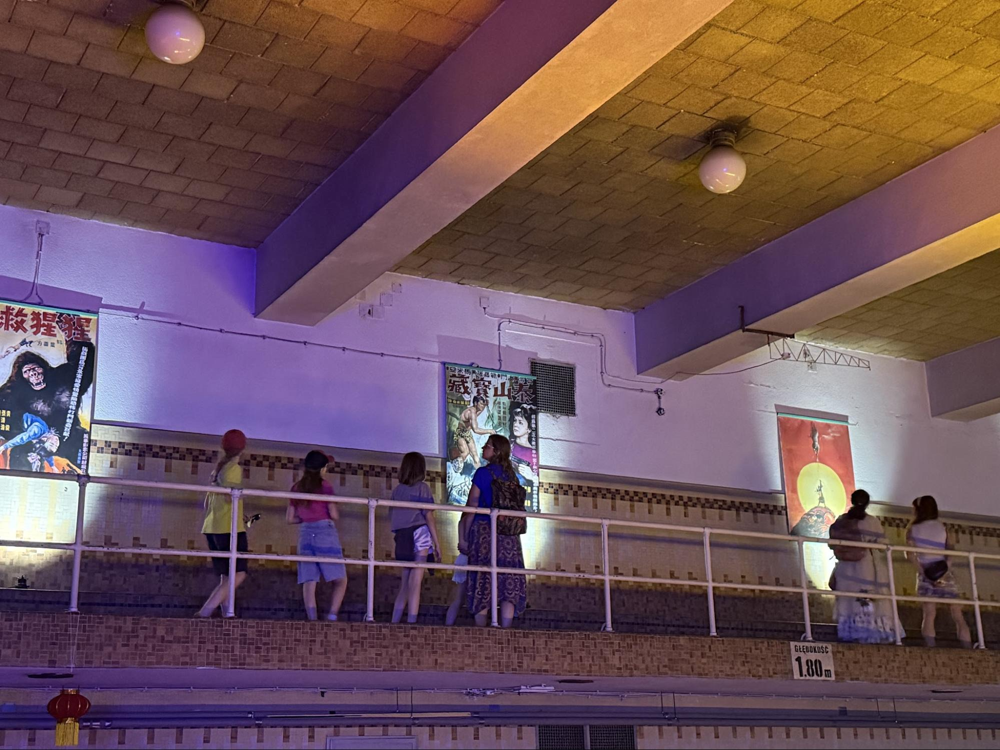
除了以書籍開啟近距離的閱讀體驗，米豆策展人陳念庭亦與羅茲攝影節策展人法蘭內克・阿梅爾（Franek Ammer）攜手合作，共同策劃了台灣當代錄像展《Kino UTOPIA 奇影烏托邦》，透過移動的光影拓展觀看臺灣的維度。在展覽期間，團隊更進一步策劃了一系列深度的跨國座談與文化體驗工作坊，讓波蘭乃至來自東歐各地的觀眾，不僅能以眼睛觀看，更能經由交流、對話與親身參與，在多重感官的碰撞中，立體而生動地認識臺灣。
返航靠岸｜「漂流圖書館」在臺灣重啟對話 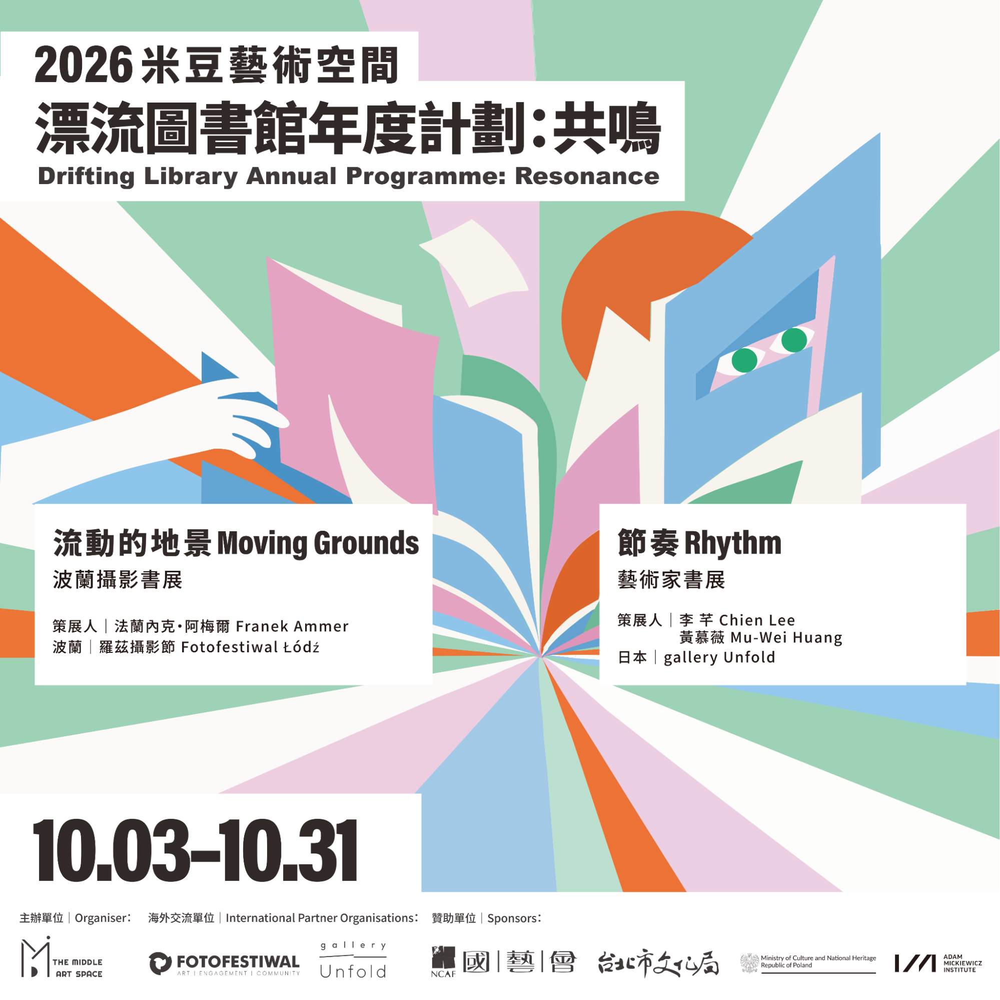
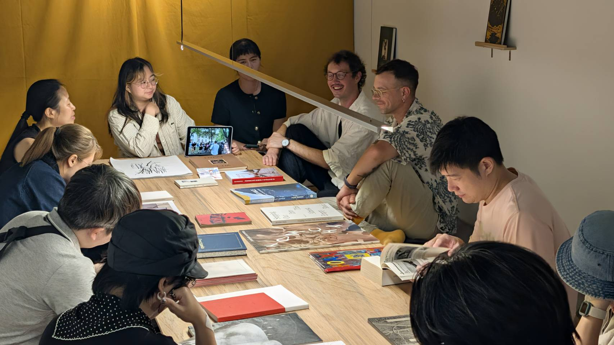
2026年，我們將海外實踐中感受到的對話厚度化為養分，以「共鳴」（Resonance）作為年度關鍵字——關注藝術如何在不斷的位移與相遇之中產生迴響，讓跨越疆界的創作經驗，如聲波般在彼此的差異間激盪出新的振動。這一次，漂流圖書館在米豆開展為兩條相互呼應的對話軸線：
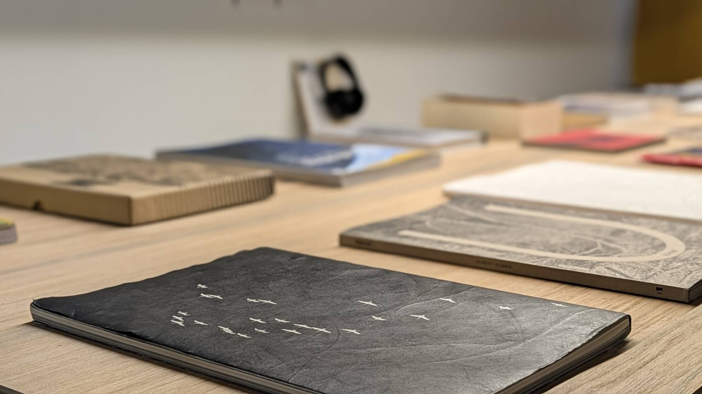
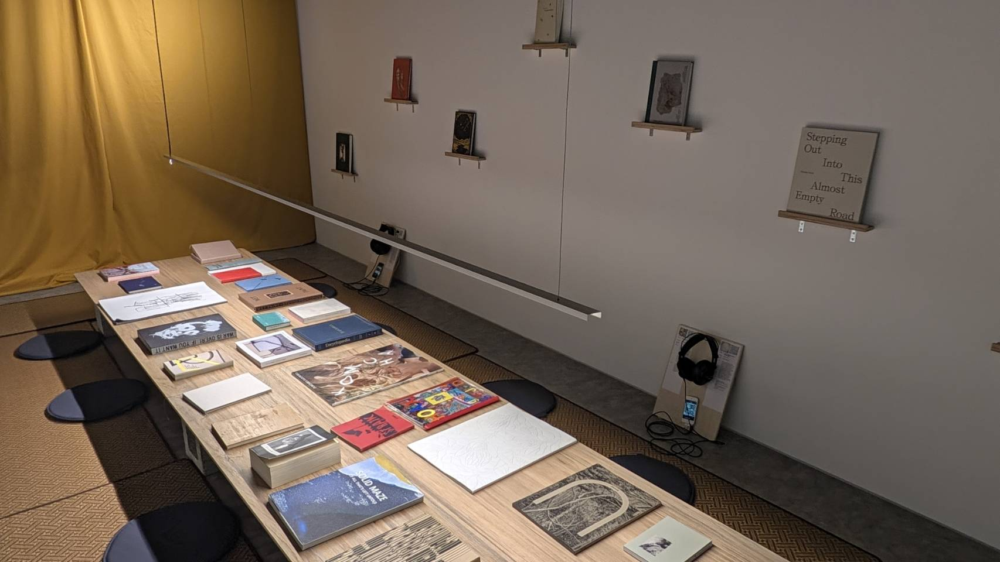
一樓是由波蘭羅茲國際攝影節策展人法蘭內克・阿梅爾（Franek Ammer）策劃的《流動的地景：波蘭攝影書與聲音地景》（Moving Grounds: Polish Photobooks and Soundscapes）。展覽匯集了波蘭當代攝影書、環境音樂與實驗聲響，透過閱讀與聆聽的交織，勾勒波蘭在歷史轉型、社會變遷與遷徙軌跡中的精神地貌。
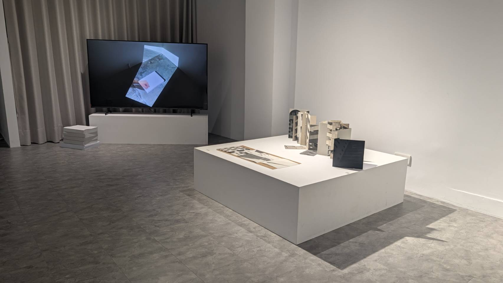
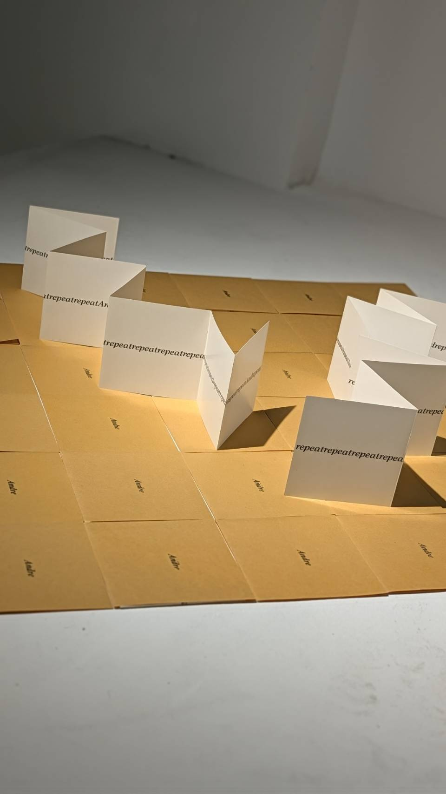
二樓則由日本 gallery Unfold 推出《節奏 ── 藝術家書展》（Rhythm – Artist’s Book Exhibition）。展覽以「閱讀的節奏」為起點，將翻閱視為一種調動身體、時間與空間感知的互動過程，探索藝術家如何將「書」作為創作媒介，讓私密的閱讀行為轉化為感官與身體的共享經驗。
透過波蘭與日本兩檔策展案的並置與對話，米豆期待這座漂流圖書館不僅是一處展出場域，更能成為一座雙向交流的航道，激盪出跨越地理與文化的層層共振。
席地停駐｜以日常尺度營造的展場空間 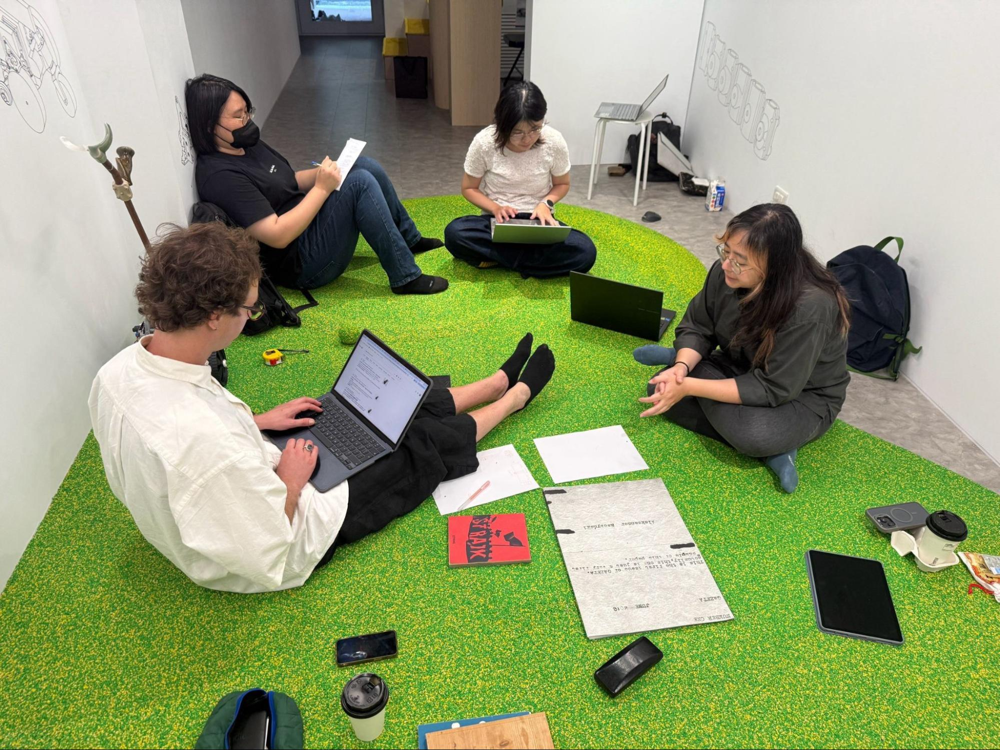
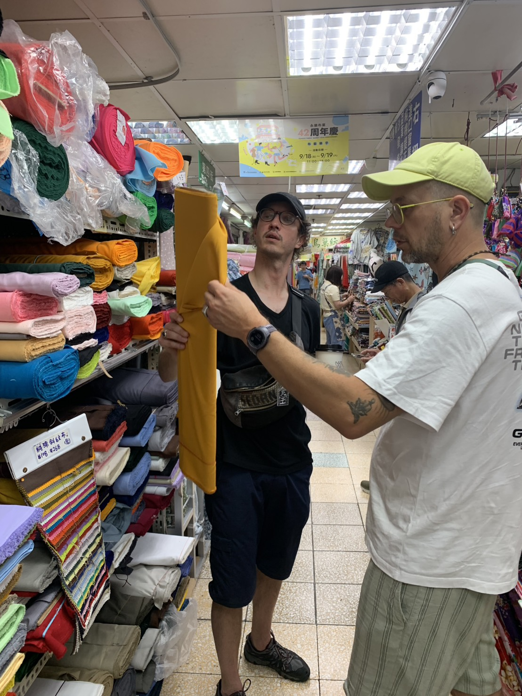
為了讓來到米豆的觀眾能卸下拘束、自在停留，在展覽籌備之初，我們便與策展人 Franek Ammer 針對空間的身體感知展開多次討論。如何讓遠道而來的波蘭攝影書與聲景，在臺北的街巷空間中找到最貼切的著陸方式？
原先 Franek 提出希望以大面積地毯覆蓋地面，但在實際來到台灣摸索生活質地與身體習慣後，決定選用更貼近臺灣日常觸感的草蓆，搭配質樸溫潤的木料、空心磚，以及散發柔和光暈的手作燈具。刻意降低的桌面高度與散落其間的坐墊，打破了美術館常見的站立仰望與審查式距離，營造出一處能夠席地而坐、從容翻閱與靜心聆聽的圖書館空間。
書頁紋理｜跨越邊界的記憶與當代處境 當交流從羅茲延伸至臺北，《流動的地景：波蘭攝影書與聲音地景》以超過40本攝影書，帶領觀眾認識波蘭攝影創作者對歷史、遷徙、都市發展與個人處境的關注。書籍的紙張、編排與裝幀，也影響影像被觀看的順序與節奏，讓觀眾在翻閱中接近這些議題。
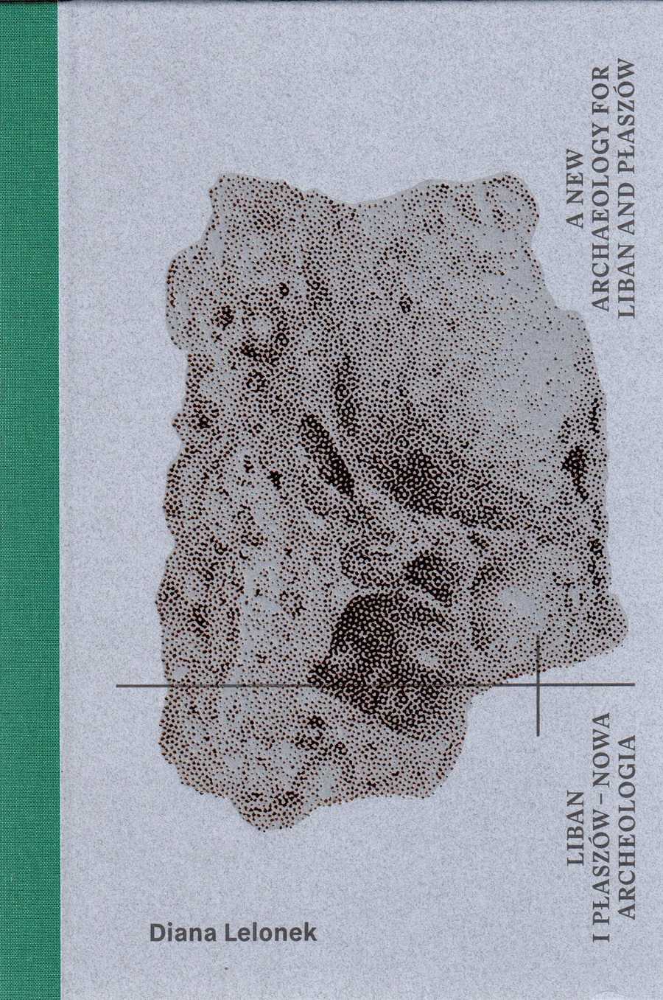
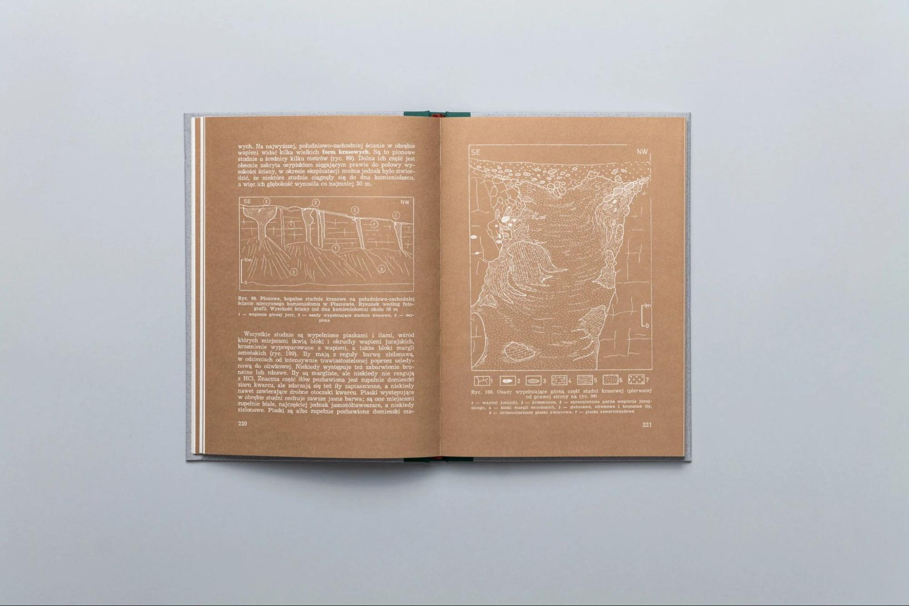
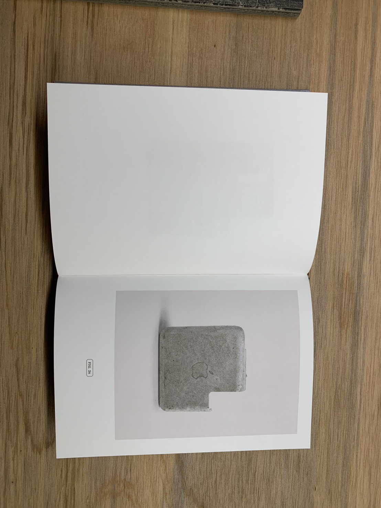
Diana Lelonek 的《利班與普瓦舒夫的新考古學》（A New Archaeology for Liban and Płaszów），透過攝影呈現歷史場址中的戰爭遺留物、電影道具與當代垃圾，並與地質標本及自然環境並置。在逐漸被植物覆蓋的場址中，不同年代的痕跡交錯，讓我們思考記憶如何被保存，又如何隨時間改變。
Weronika Gęsicka 的《百科全書》（Encyclopaedia）延續她對檔案影像與共同記憶的探索，進一步運用人工智慧工具，鬆動影像與真實之間的關係。看似熟悉的視覺形式，也可能引領我們走入充滿假設與不確定性的世界。
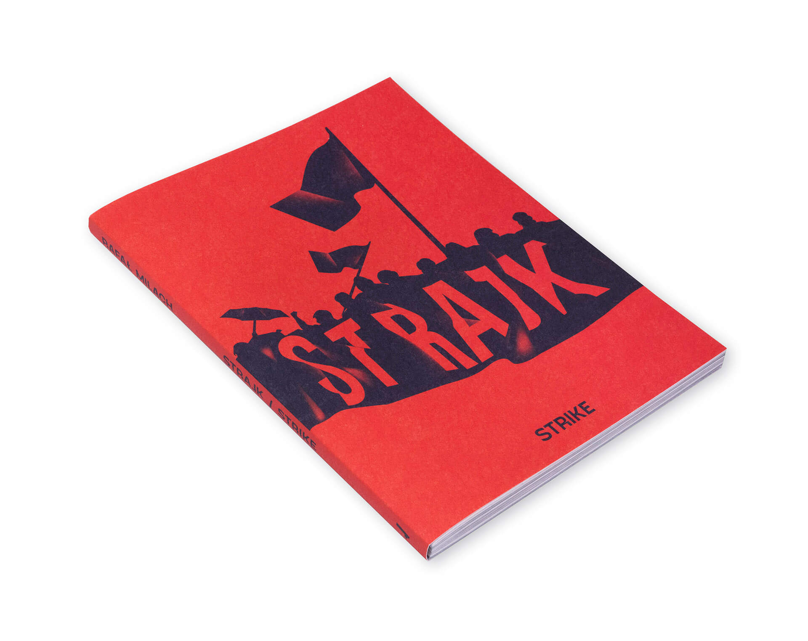
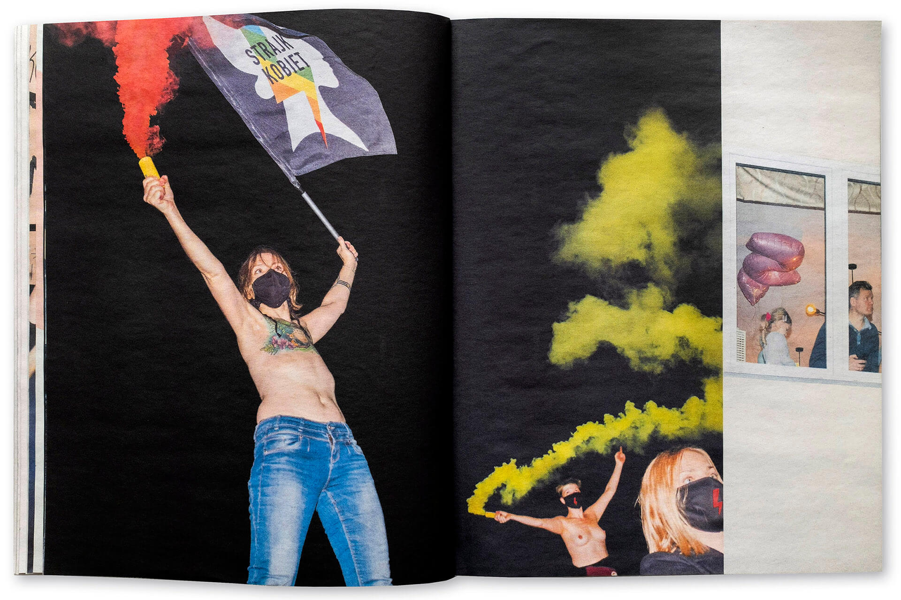
Rafał Milach 的《罷工》（Strajk）記錄波蘭墮胎權爭議引發的公民抗議，呈現人們走入街頭、共同表達立場的時刻。他的另一套出版品《我警告你》（I Am Warning You），則將目光轉向邊界牆，探討政治控制如何進入地景，並留存在邊境社群的記憶之中。
除了重點單位的深度交流，波蘭館長與策展人們也造訪了臺北市立美術館、台北當代藝術館、臺灣師範大學、臺北教育大學、寶藏巖國際藝術村、C-Lab 以及米豆藝術空間。透過與各單位專家學者的密集互動，這場「迴聲」從點到面，在臺灣各個藝文角落激盪出溫暖的火花。
深入在地｜走訪藝文機構與創作者社群 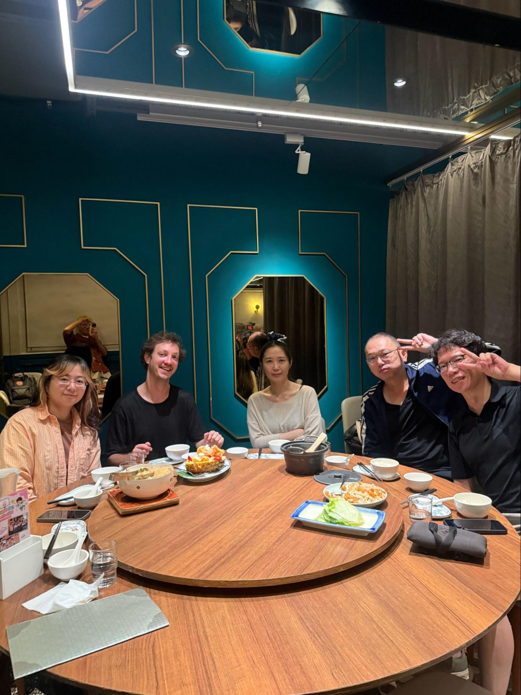
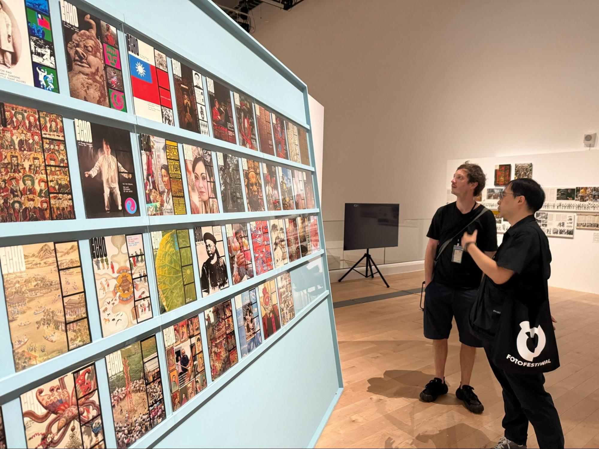
在臺駐村期間，米豆團隊規劃了一系列深入在地的機構參訪交流行程，引領策展人 Franek Ammer 走進臺灣當代藝術的現場，並與先前在羅茲共同合作《Kino UTOPIA 奇影烏托邦》的臺灣藝術家們再度聚首。透過面對面的真誠交流，讓他從展場裡的靜態作品，進一步觸摸到臺灣創作者所處的現實環境，以及在地藝文組織靈活而深具韌性的運作樣貌。
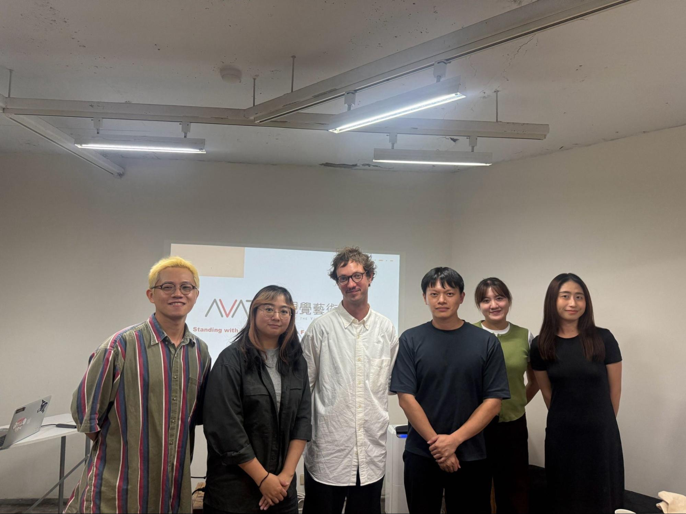
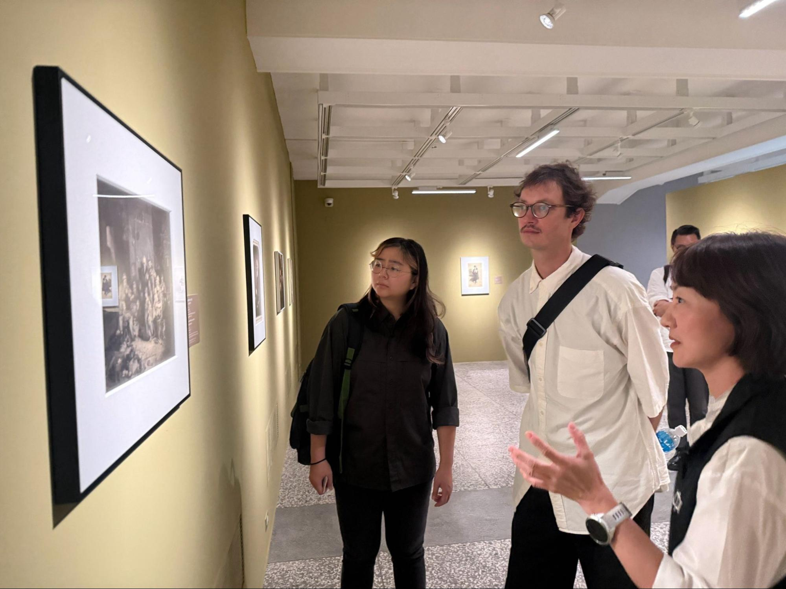
在機構拜訪中，米豆偕同 Franek 前往新北市美術館，由策展人張世倫親自導覽《民間／攝影：紀實影像的敘事生成》展覽，深入爬梳臺灣攝影、民間社會與生活文化的緊密連結，以及影像如何經由雜誌刊物與出版網絡在時代中流動。隨後，行程走訪了國家攝影文化中心臺北館，聚焦於臺灣攝影資產的典藏、研究與當代展示策略；並拜會社團法人台灣視覺藝術協會（視盟，AVAT），深入理解臺灣當代藝術生態中，民間替代空間、藝術家支援體系與倡議組織的發展脈絡與實踐歷程。
這趟穿梭於美術館、文獻機構與替代空間的踏查旅程，不僅讓遠道而來的策展人立體地理解了臺灣影像與當代藝術的在地土壤，也為臺波兩地未來的長期合作，鋪展了更為深厚、具體的對話基礎。
漣漪擴散｜展場之外的校園、電台與書市集 除了展廳內的閱讀與聆聽，米豆也將交流的觸角延伸至校園課堂、獨立電台與地方書市集，促成海外策展人與臺灣在地藝術、出版及音樂社群的多元交會。
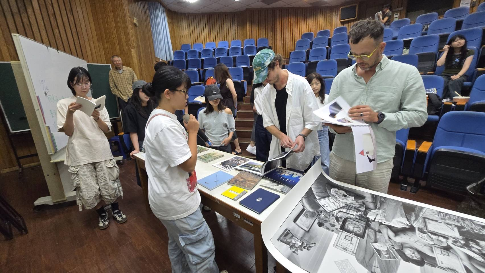
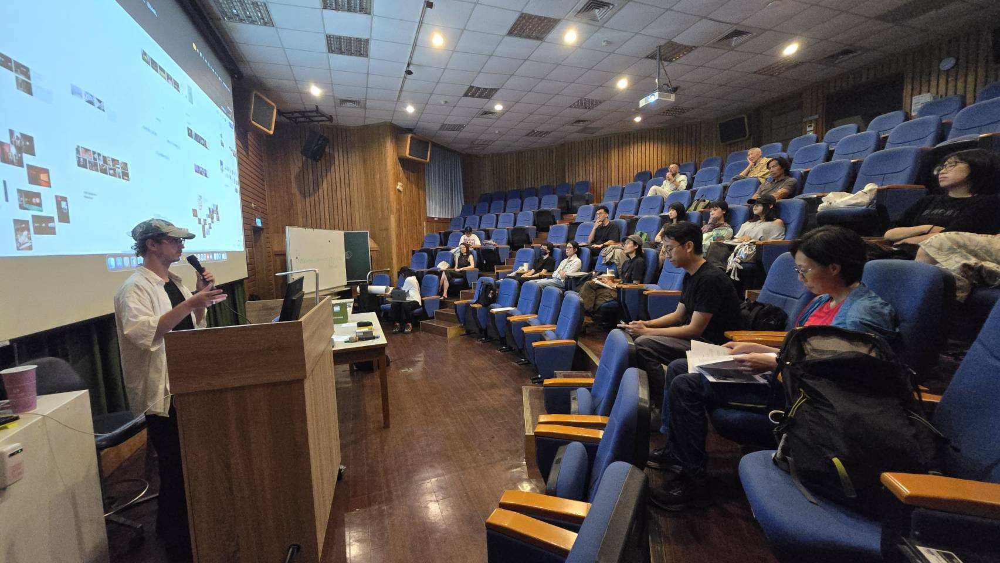
在藝術家姚瑞中的邀請下，策展人 Franek Ammer 走進國立臺北藝術大學藝術跨域研究所，向青年學子分享羅茲攝影節的歷史脈絡與自身的策展實踐；學生們亦帶來個人的創作小誌（Zine）與作品集，在面對面的評讀與交流中，讓課堂自然轉化為激盪創作思維的對話現場。
展覽開幕前夕，Franek 則透過 TOHA Radio 選播波蘭獨立音樂廠牌的聲響作品，以聲音為前導，讓聽眾在空中率先感知波蘭當代文化的獨立精神。此外，在各場展覽開幕、看展空檔及工作室的聚會裡，Franek 與同行訪臺的波蘭策展人托馬許・帕維爾齊克（Tomasz Pawłowski-Jarmołkowicz, Tomek）密集接觸了涵蓋攝影、獨立出版、平面設計與聲音跨域的創作者，透過手遞手的刊物交換與促膝交談，深掘出官方參訪之外、蓬勃流動的民間創作能量。
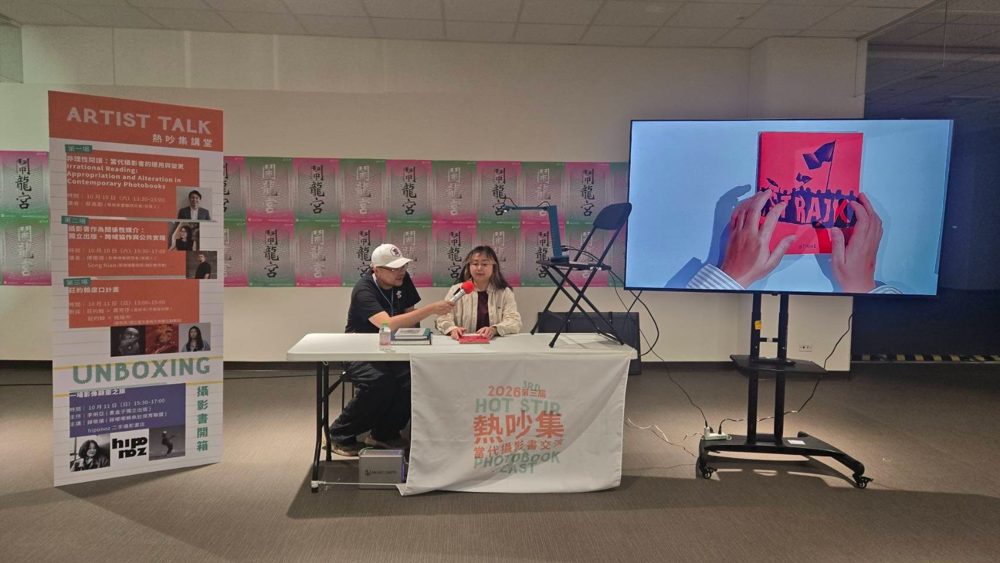
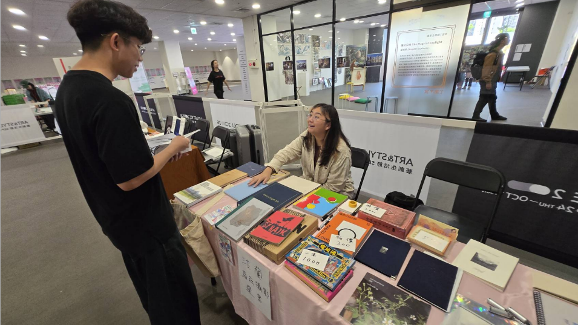
米豆亦受邀參與「熱吵集」攝影書市集，深入臺灣在地的小誌與獨立出版網絡。米豆藝術空間總監陳念庭於活動現場介紹本次漂流圖書館計畫展出的波蘭當代攝影專刊，誠摯邀請市集裡的讀者與創作者走入米豆藝術空間，在親身翻閱與聆聽中，讓國際展覽真正接合在地閱讀社群的脈動。
共鳴延續｜從雙向往返走向下一段旅程 從臺灣攝影書跨海赴羅茲展出，到波蘭攝影書與聲景在臺北駐足，「漂流圖書館計畫」藉由書籍與人的雙向往返，一步步沉澱出扎實的跨國共事信任。
隨著駐村交流圓滿告一段落，米豆將持續擔任搭建橋樑與連結社群的推手，讓每一次紙頁翻閱與對話所開啟的珍貴相遇化為沃土，成為兩地藝術生態緊密共振、催生下一趟探索旅程的基石。